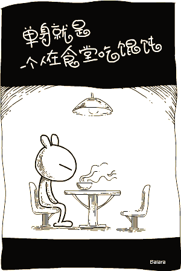

爱情的严格量子力学描述
Contents
$$\newcommand{\bra}[1]{\left\langle #1\right|}
\newcommand{\ket}[1]{\left| #1\right\rangle}
\newcommand{\braket}[2]{\langle #1 \mid #2 \rangle}$$
返回来看一下，真是漏洞百出，丢人啊。
系列文章目录：
第一篇：爱情的严格量子力学描述
第二篇：爱情的量子理论2
第三篇：心理叠加态：从量子爱情到人的所有心理
第四篇：基于统计数据的量子爱情
呐，本文的主要目的是卖萌、买萌，总之是萌的交流，而不是知识技术的交流。嗯呐。
另外，本文没有任何性别和性取向歧视的意思，非常欢迎大家做出一个更加全面的“理论”。
提醒：阅读本文需要量子力学基础。
要描述一个体系，按照力学的观点，有就是牛顿那个无法实现的理想，应该是包括以下几步：
- 描述一个体系的状态。例如如何把初始状态描述出来。
- 描述一个体系的时间演化。
- 从计算结果中提取我们想要的信息，例如可观测量，物理量等等。
当然在牛顿力学中我们有一套方法，在统计中有一套方法，量子中，基本上就是两者的结合。我们今天要尝试的是，使用量子力学来描述情人节的我。
从非常简单的假设出发，得出了几个结论，不严格的说：
- 一个单身的人，如果不接触其他人是不能脱单的（废话 ==）；
- 一个单身的人，自己是不完备（有严格定义）的（废话 == ）；
- 对于处在单身和恋爱叠加态的人，是可以通过测量理论给出严格的不同的表白结果概率的；
- 两个单身男女放在一起，是可能存在纯洁的友谊的，但需要特殊的性别叠加态；
- 两个单身的男女放在一起，如果想要脱单，必须两者之间存在相互作用（废话 ==）。
单个体的理论
状态的描述
首先，我是一个单身的男（zhuang）孩(chun)。

( Source )
所以要描述我的状态，必须有一个表示爱情状态的波函数
$$\ket{\mathrm{Single}} .$$
另外，我是一个“男孩”，所以必须有
$$\ket{\mathrm{Boy}} .$$
这两个是不同的相空间，这类体系的哈密顿量也是简单的两个不同的哈密顿量的直和，所以实际上能够描述我的态矢是，
$$\ket{\mathrm{Lei}} = \ket{\mathrm{Single}}\otimes \ket{\mathrm{Boy}} .$$
这是一个不严格的套路，更加严格的套路必须先定义空间，当然有了上面的灵感，完整的空间应该是
$$\{ \ket{\mathrm{Boy}},\ket{\mathrm{Girl}} \} \otimes \{ \ket{ \mathrm{Single}},\ket{\mathrm{Non-Single} }\} .$$
为了简化，我们就简单的认为
$$\ket{\mathrm{Non-Single}} = \ket{\mathrm{inLove} }.$$
并且每个子空间中的态矢是正交归一的。
仅有状态描述得出的推论
我自己是不完备的，因为
$$ \ket{\mathrm{Boy} }\bra{\mathrm{Boy}} + \ket{\mathrm{Girl} }\bra{\mathrm{Girl}} = \hat I .$$
时间演化
原则上可以用 Schrödinger 方程，这里我们不用它，而是用另一种更加漂亮的描述。
$$\mathrm{i}\hbar \frac{\partial}{\partial t} \hat \rho = \left[ \hat H, \hat \rho \right]$$
毫无疑问，这里用到了对易子算符。1
那么对于一个有我自己组成的孤立体系，是不可能从 $\ket{\mathrm{Single}}$ 演化到 $\ket{\mathrm{inLove}}$ 的。所以，我现在的状态
$$\ket{\mathrm{Lei}} = \ket{\mathrm{Single}}\otimes \ket{\mathrm{Boy}} $$
是我自己孤立体系的 Hamilton 的一个本征态。换句话说，
$$ \left[ \hat H, \hat \rho \right] = 0 $$
这样一来，我这个孤立体系是没法从演化到 $\ket{\mathrm{inLove}}$ 态的。所以我需要外界的帮助，当然对我来说，这个外界的帮助是一个女孩跟我相互作用。
结果的提取
通过上面的这些讨论，我们可以直接借用 QM 中的测量理论，如果我处在体系（现在可以扩展，不一定是我自己的孤立体系的 Hamilton 了）的本征态上，那么我就是 Stationary 的，换句话说，如果我处在$\ket{\mathrm{Single}}$态（只看这个子空间）上，那么怎么测量我都是这个态，没有时间演化。
但是如果我处在一个叠加态 $\ket{\mathrm{Single}} + \ket{\mathrm{inLove}}$，那么单次测量，我就跳到某一个本征态上，这个情况下当然是概率相等，不过如果我处在 $ C_1\ket{\mathrm{Single}} + C_2 \ket{\mathrm{inLove}}$，那就不等概率了，而且可以计算。（算个球球，你得找个办法得出两个系数好嘛，总不能靠猜。）
二人体系
呐，我们要不要考虑二人（这里仅仅指男 + 女）体系？要考虑这个问题，需要搞清楚这样两个事情：
- 二人的相互作用项应该是什么样？
- 全同粒子理论会对结果有影响么？
状态描述
无相互作用的情况下，一个比较自然的想法是，我们可以直接把两个人的波函数乘起来嘛，因为如果没有相互作用，总的 Hamilton 就是
$$\hat H(\vec r_1,\vec r_2) = \hat H_1(\vec r_1) + \hat H_2(\vec r_2)$$
这里呢，$\vec r_i$ 是指的各自在总空间的坐标，也就是说，我们可以制作对于二人体系的一个完备基矢 $\{ \ket{r_1,r_2} \}$.
这样一来，二人体系的波函数可以写作
$$\ket{\psi} = \ket{\psi_1}\otimes \ket{\psi_2}$$
有什么问题？
- 需要考虑全同粒子么？
需要考虑的理由是，如果去掉性别属性，那么所有的人（在我们这个理想模型中）都是全同的，所有性别属性就等价于自旋之类的属性，而且比较简单，因为我们只考虑两个性别（一个更加全面的理论应该考虑所有的情况，例如 Trans）。所以我们必须考虑全同粒子带来的问题。 - 相互作用该不该考虑？
需要考虑。因为如果我们不考虑相互作用，那么对于两个处在各自 Hamilton 本征态的人，即便放在了一起，也不能演化成 $\ket{\mathrm{Non-Single}} = \ket{\mathrm{inLove}}$.
所以我们下面需要挨个考虑这两个问题。
全同粒子效应
性别可以组成两个不连通的子空间，一个是性别单态，一个是性别三重态。
性别单态对应的波函数分别是：
$$ \ket{g=0,m_g=0} = \frac{1}{\sqrt{2}} (\ket{\mathrm{Boy, Girl}} – \ket{\mathrm{Girl, Boy} } ) $$
性别三重态对应的波函数：
$$ \ket{g=1,m_g=0} = \frac{1}{\sqrt{2}} (\ket{\mathrm{Boy, Girl}} + \ket{\mathrm{Girl, Boy} } )$$
$$ \ket{g=1,m_g=-1} = \ket{\mathrm{Boy, Boy}} $$
$$ \ket{g=1,m_g=1} = \ket{\mathrm{Girl, Girl}} $$
呐，我们现在只讨论其中一类情况，就是 $m_g = 0$ 的情况，因为对称性比较好。
性别单态
这样看来，我们的体系是费米子体系，也就是说粒子交换算符 $P_{12} = -1$ 的体系。
因为性别波函数已经是反对称了，所以我们不需要对爱情状态波函数进行特殊处理，就保持原样即可，因为原来就是对称的。这样合起来的总的波函数是反对称的，符合要求。
性别三重态
只讨论 $m_g = 0$. 性别波函数是对称的，所以需要是的状态波函数反对称。
$$ \ket{\psi} = \frac{1}{\sqrt{2}}( \ket{\mathrm{Boy’s State1}} \ket{\mathrm{Girl’s State}} – \ket{\mathrm{Girl’s State1}} \ket{\mathrm{Boy’s State}} ) $$
大家可以发现，三重态中，两个都单身的男女组成的体系中，在本征态中找到两个人同时处在单身的状态是不可能的，这就是对应的 Pauli 不相容原理。
但是这个只是对三重态成立，对于单态，就不存在这个结论。
相互作用
相互作用比较麻烦，我会在另一篇文章中详细讨论这个问题。等这个写全了，可以弄个 April Fool’s Day 文什么的。
第二篇：爱情的量子理论2
- biu biu biu，跟统计物理里面的 Hamilton Dynamics 差不多嘛，多了个虚数（好神奇哦），多了个代表量子力学的基本量（好神奇哦），Poisson 括号变成对易子（好神奇哦）。真打脸。刚才说量子力学是统计物理和经典力学的杂交（真的么？）。 ↩

虽然完全不知道在讲什么但是觉得被治愈了
还没玩呢，还有一个简单说就是如何追女生和谈恋爱的部分。要等等才能做好。
精辟